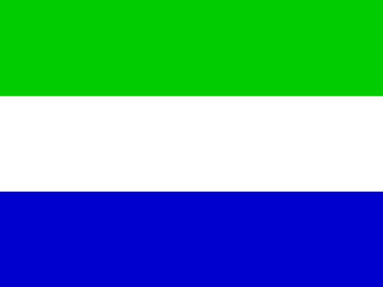
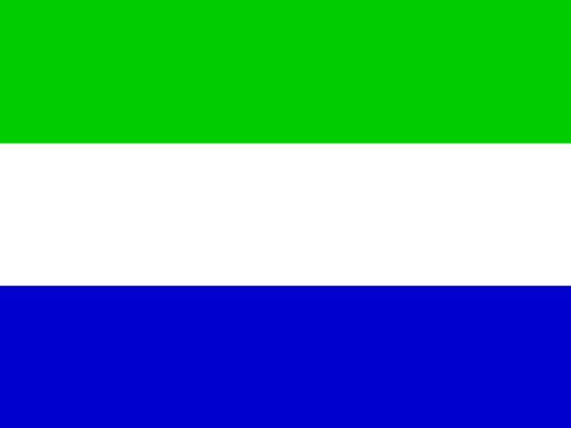

Arabica
Gout : doux et complexe avec une note fruitée
Altitude : 600 à 2100m
Régions de Culture : Amérique centrale, Amérique du Sud, Afrique de l'Est, Asie du Sud-Est
Pays Principales :


Robusta
Gout : corsée et amer
Altitude : 0 à 800m
Régions de Culture : Afrique, Asie du Sud-Est
Pays Principale :

Liberica
Gout : terreux et boisé
Altitude : 200 à 1200m
Région de Culture : Afrique de l'Ouest
Pays Principales :

 

Excelsa
Gout : acide et fruité
Altitude : 600 à 1400m
Région de Culture : Asie du Sud-Est
Pays Principale :
Kona
Gout : doux et velouté avec des notes de noix et de chocolat
Altitude : 300 à 900m
Région de Culture : Amérique centrale
Pays principale :
Hawaï
Yigacheffe
Gout : florale et citronné
Altitude : 1500 à 2200m
Région de Culture : Afrique de l'Est
Pays principale :
Blue mountain
Gout : doux et équilibré avec une note d'agrumes
Altitude : 900 à 1800m
Région de Culture : Amérique du Sud
Pays principale :

Geisha
Gout : florale et fruité
Altitude : 1500 à 2200m
Région de Culture : Amérique centrale
Pays principales :

Java
Gout : terreux et épicé
Altitude : 300 à 1400m
Région de Culture : Asie du Sud-Est
Pays principale :

Sumatra
Gout : terreux et épicé
Altitude : 800 à 1600m
Région de Culture : Asie du Sud-Est
Pays principale :